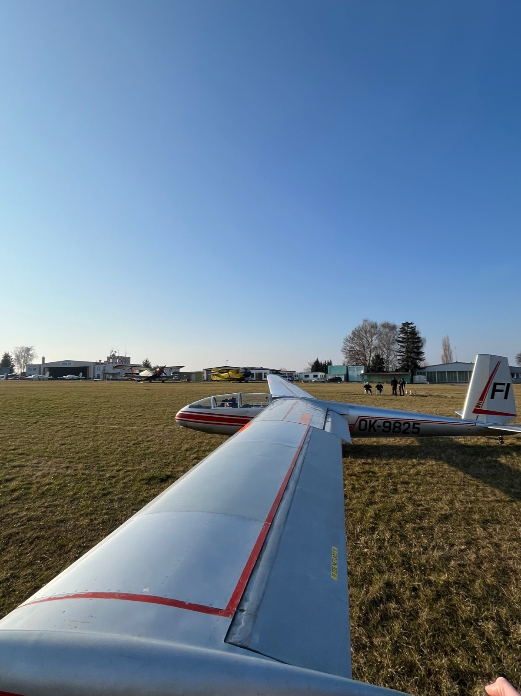
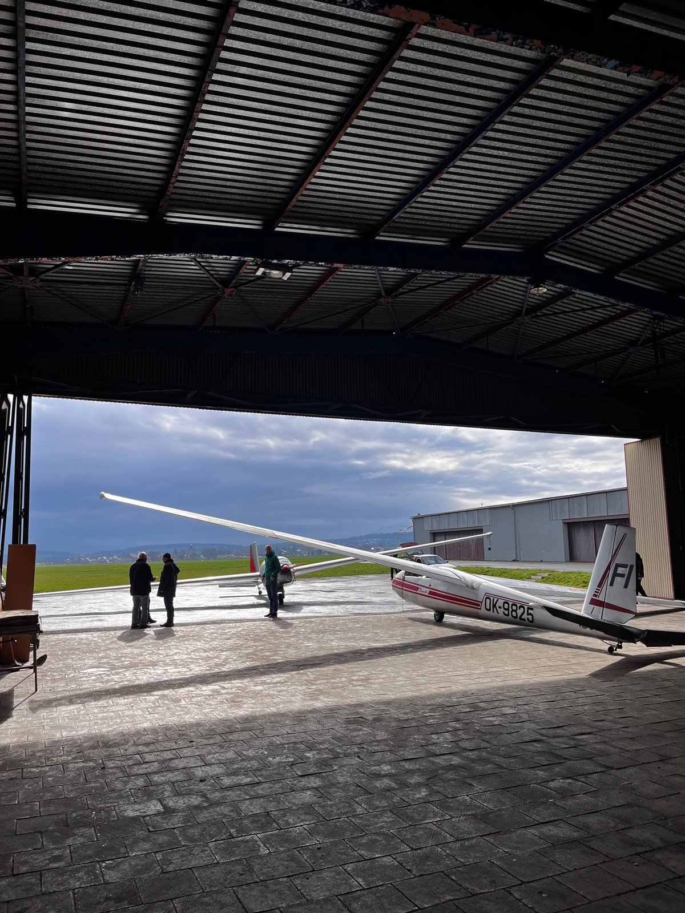
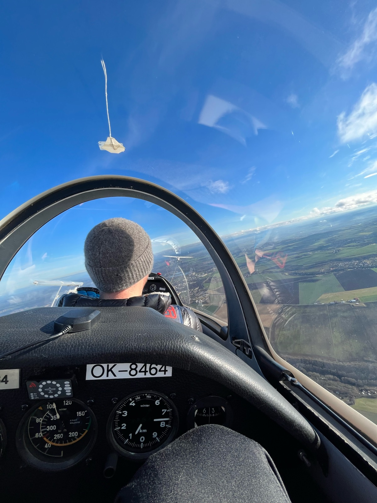

Jak začít létat
K plachtění nepotřebujete vlastní letadlo ani drahou leteckou školu. V Česku se na kluzácích učí v aeroklubech. Samostatně létat můžete od 14 let, pilotní licenci lze získat od 16 let.
Cesta k licenci krok za krokem
-
Seznamovací let
Většina aeroklubů nabízí let s instruktorem na dvoumístném kluzáku. Je to nejlepší způsob, jak zjistit, jestli vás létání chytne.

Legendární kluzák L-13 Blaník. -
Přihláška do aeroklubu
V Česku výcvik nejčastěji probíhá v aeroklubech. Jsou to spolky, které fungují díky svým členům, a komerční letecké školy jsou u kluzáků spíš výjimkou. Se začátky proto souvisí i jiné činnosti než samotné létání: pomoc s provozem na letišti, startování ostatních a péče o letadla.

Hangárování výcvikového kluzáku L-13 Blaník. -
Zdravotní prohlídka
Před prvním samostatným letem potřebujete osvědčení zdravotní způsobilosti od leteckého lékaře. Pro kluzáky stačí nejnižší třída, osvědčení LAPL. Přísnější osvědčení 2. třídy potřebují až piloti motorových letadel s licencí PPL.
-
Průkaz radiotelefonisty
Před prvním samostatným letem potřebujete také platný průkaz radiotelefonisty, protože bez něj nesmíte obsluhovat palubní radiostanici. Pilotům kluzáků stačí omezený průkaz radiotelefonisty letecké pohyblivé služby (OFL), na který se skládá zkouška na Českém telekomunikačním úřadu (ČTU).
-
Teorie
Meteorologie, navigace, letecké předpisy, aerodynamika, provozní postupy, radiokomunikace a lidská výkonnost. Výuku zajišťuje aeroklub. Teoretické zkoušky se od dubna 2026 skládají přímo na Úřadu pro civilní letectví.
-
Praktický výcvik
Výcvik začíná lety s instruktorem na dvoumístném kluzáku. Ve vzduchu si postupně osvojíte principy řízení, pak se propracujete ke vzletu a přistání a nakonec přijde první samostatný let, zážitek, na který se nezapomíná. Následuje nácvik postupů, přistání do terénu a první přelet. U nás se kluzáky do vzduchu nejčastěji dostávají aerovlekem, tedy za vlečným letadlem. Startovat se dá i navijákem, ten se ale dnes používá méně, protože s rozšířením ultralehkých vlečných letadel už není tak finančně výhodný jako dřív. Předpisy vyžadují nejméně 15 hodin výcviku, z toho 10 hodin s instruktorem, 2 hodiny samostatně a 45 startů.

Pohled instruktora ze zadního sedadla dvoumístného kluzáku. -
Zkouška a licence
Výcvik končí praktickou zkouškou s examinátorem. Licence se jmenuje SPL (průkaz pilota kluzáků) a vydává ji Úřad pro civilní letectví.
Co přijde po licenci
Licencí to nekončí, spíš teprve začíná. Můžete pokračovat dalším výcvikem, například akrobatickým, protože i na kluzácích se dá létat akrobacie. Nebo se můžete pustit do přeletového létání, anglicky cross-country, a později třeba i do soutěží. Cestující smíte vozit až po dalších 10 hodinách letu nebo 30 startech jako velitel a jednom cvičném letu s instruktorem.